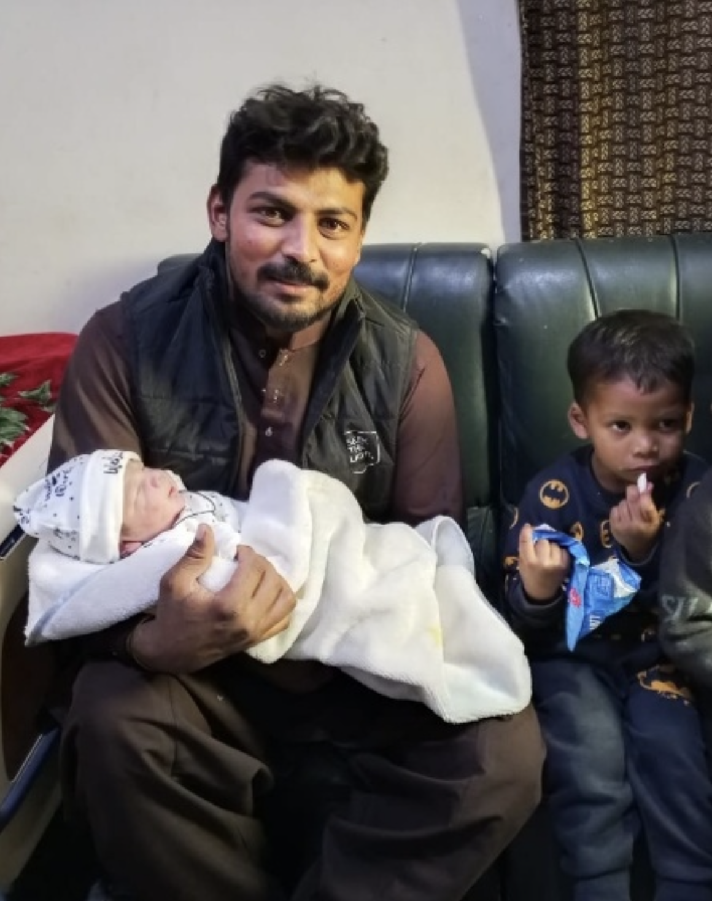

News
Shah Family
Prina Wernicke · January 2026
The Shah Family
The Shah family live in a rural Punjabi village in Pakistan. They rely on selling produce from their farming and livestock for income. Dependent mostly on horticulture, they grow seasonal vegetables and fruits. They also keep two to three buffalos and a few goats for milk and meat produce.
Early in 2020, Project Hope became aware that Haroon Shah (then 23 years old) was facing the possibility of dropping out of university due to the family being unable to afford his fees. The only option the family could foresee was to sell one of their two buffalos at the time in order to keep paying Haroon's university fees.
Having experienced a challenging harvest season, this would have considerably impacted their ability to earn income that year, leaving the family with only one buffalo and insufficient crops to sell.
Haroon Shah's Graduation - December 2022
From January 2020 to December 2022, Project Hope financially supported Haroon to complete his university studies so that the rest of the family did not have to go without a considerable source of income during those years.
In December 2022, Haroon graduated with a dual degree (Bachelor of Mathematics and Bachelor of Computer Science) from Forman Christian (FC) College in Lahore, Pakistan.
Since graduating, Haroon has applied to work abroad in Qatar, where he is hoping to secure employment in his field of study in 2026.
Project Hope remains committed to supporting the Shah family financially until Haroon is able to secure an ongoing income and help the family maintain a standard of living above the poverty line.
Raj Shah's Role with Project Hope
In addition to this, Haroon's older brother, Raj Shah, is employed as an Operations Manager by Project Hope to manage on-the-ground logistics in Pakistan.
Raj assists Project Hope by managing and carrying out responsibilities associated with the support currently being offered to the Gill family.
Raj undertakes the following responsibilities:
- Arranging school interviews
- Managing invoices and payments for school and hostel fees and associated living costs
- Escorting the Gill family children to and from their boarding school for school terms and holidays (a two-hour journey each way by public transport)
- Overseeing and managing international financial transfers and expenditures
- Mentoring and assisting the Gill family with day-to-day challenges
- Arranging healthcare appointments
- Ensuring quality assurance of the aid administered by Project Hope
Without Raj's integrity, work ethic, and tireless dedication, the work Project Hope carries out on the ground would be very difficult to execute. We thank him for his remarkable commitment to the vision of Project Hope.
Raj married in 2024 and now has two young children of his own.
How Your Donation Helps
Your donation to Project Hope will assist Haroon in securing further employment in the near future so that the Shah family can obtain financial independence.
Your donation will also ensure that Raj is able to continue his vital role as Operations Manager for Project Hope.
Your contribution is greatly valued.
Please note that names of persons mentioned above have been changed to preserve their confidentiality and safety